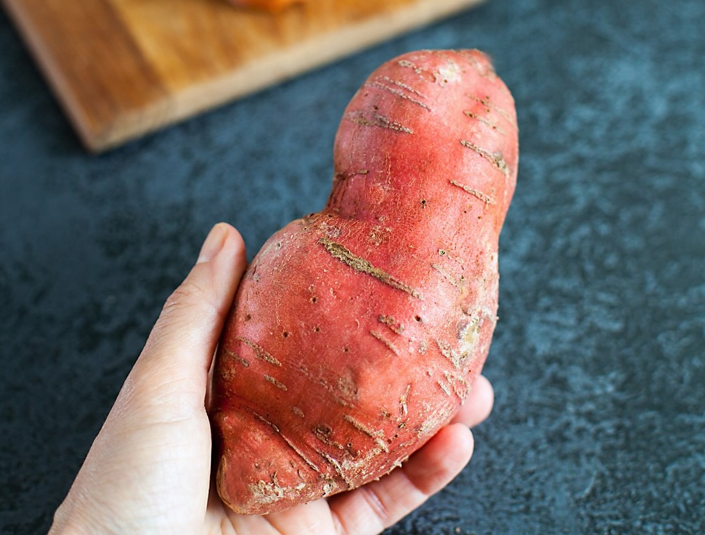

Батат
Батат, или по-другому сладкий картофель, на самом деле не имеет к картофелю никакого отношения. Это растение из семейства вьюнковых, растет практически как лиана длиной до 5 м. Он, как и катофель, приехал в Европу вместе с Колумбом, но такой же популярности, как картошка, не получил, хотя и внешне похож, и по вкусовым свойствам, и во многих блюдах способен полностью его заменить. Интересно, что, в отличие от картофеля, батат можно есть сырым. Иногда батат по вкусу сравнивают с морковкой или тыквой, в зависимости от того, каким способом он приготовлен, поэтому можно им заменять или дополнять эти овощи в разных блюдах. Батат продается в магазинах круглый год, хотя лучший сезон для него — осень.
Внешний вид батата зависит от сорта. Кожура по цвету варьируется от коричневого, розового и оранжевого до фиолетового, мякоть — от светло-желтого до оранжевого и пурпурного, причем чем более она светлая, тем менее сладкий батат. В продаже чаще всего встречается оранжевый сорт с кожурой медного или красно-коричневого оттенка. По вкусу сырой батат напоминает сладковатый подмороженный картофель. Приготовленный — что-то среднее между картошкой, тыквой и морковкой. Выбирать лучше твердые увесистые экземпляры около 250–300 г, но не слишком громоздкие, не морщинистые, однородного цвета, без видимых внешних повреждений.
Хранить батат лучше в темном прохладном месте с хорошей вентиляцией, например, положить в плетеную корзину и поставить в темный угол кухни подальше от батареи. В таких условиях он пролежит около месяца, при более высокой комнатной температуре будет храниться 1–2 недели. Не стоит хранить батат в полиэтиленовом пакете, так он быстро испортится, и не в холодильнике, потому что низкая температура приведет к изменению структуры и внутри батат станет похож на влажную пробку.
У батата тонкая кожура, которая легко очищается ножом или овощечисткой. Способы нарезки: брусочками, ломтиками, кружочками, кубиками. Можно натереть очищенный клубень на крупной терке, с помощью мандолины, на терке для морковки по-корейски или приготовить овощную «лапшу» с помощью спиралайзера. Тонкие полупрозрачные ломтики можно получить с помощью овощечистки.
В процессе приготовления батат становится мягче и сочнее, хорошо разваривается. Подходит для рагу, запеканок, может быть приготовлен теми же способами, что и обычный картофель, но с учетом более высокого содержания сахара и низкого — крахмала, поэтому в духовке, например, лучше готовить его дольше и при более низкой температуре, 160–180 °С. Из батата можно приготовить пюре, по типу картофельного, со сливками и сливочным маслом, крем-суп или суп с добавлением лука, морковки и других овощей. Вареный батат Батат можно готовить «в мундире» и очищенным. Поместить в кипящую подсоленную воду, убавить огонь и варить до мягкости около 20 минут. Готовность можно проверить вилкой или кончиком ножа, они должны легко входить в мякоть. Запеченный батат Батат перед запеканием можно нарезать «гармошкой» (вариант «Хассельбек»: положить по обе стороны от клубня по палочке для еды и прорезать тонкими ломтиками с равным интервалом поперек — палочки будут служить ограничителями, не давая прорезать мякоть насквозь, и в результате получится «гармошка») или спиралью. Добавить специи, соль и оливковое масло, отправить в разогретую до 160 °С духовку и запечь до готовности около 45 минут. Можно запечь батат ломтиками «по-деревенски» или с помощью спиралайзера сделать «лапшу», запечь с маслом и травами (время сократить, так как «лапша» запекается быстрее) и подать с раскрошенной фетой и зеленью петрушки. Жареный батат Нарезать батат брусочками, разогреть толстостенную сковородку, добавить топленое или оливковое масло, готовить на среднем огне 5 минут с одной стороны, перевернуть, жарить еще 5 минут, затем, периодически переворачивая, готовить до равномерного золотистого цвета и мягкости, всего около 15 минут. Можно обжарить батат во фритюре как картошку фри; нарезать тонкими пластинками и обжарить в масле партиями, как чипсы. Выложить на бумажные полотенца, чтобы избавиться от излишков масла. Посолить, поперчить, по желанию добавить сушеный чеснок, паприку.
Батат отлично сочетается с луком, чесноком, тимьяном, розмарином, сладкой, острой или копченой паприкой, имбирем, куркумой, чили, тыквой, сладким перцем, помидорами, цветной капустой, фасолью, чечевицей, кукурузой, баклажанами, всевозможной зеленью, авокадо, яблоками, айвой, сыром, сливками, грибами, рыбой, морепродуктами, мясом (баранина, свинина, говядина, кролик) и птицей (курица, перепелка, утка, гусь), орехами и семечками.